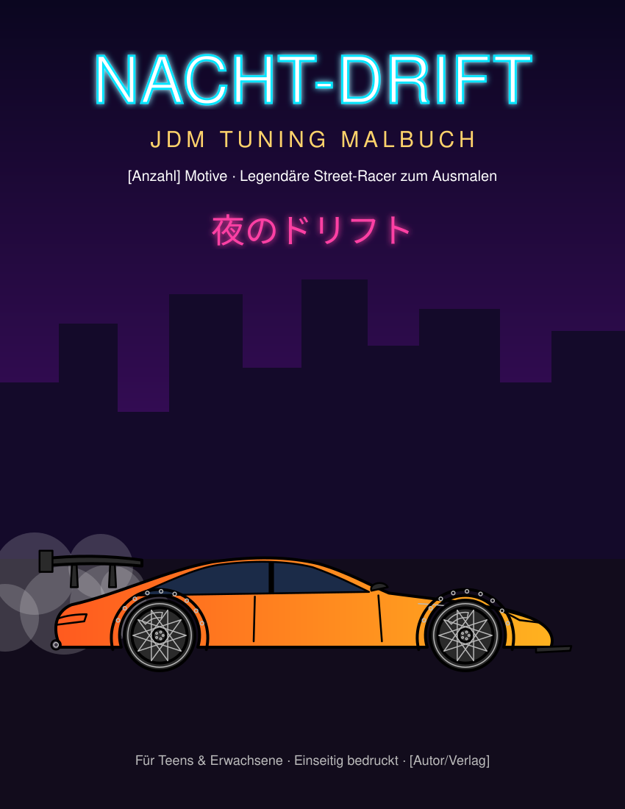
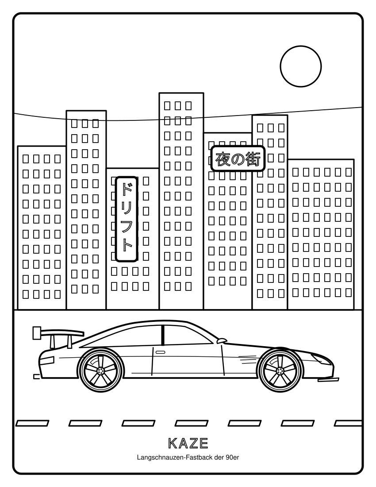

Erste Vorschau: Titelbild + 6 Ausmalseiten. Alle Fahrzeuge sind frei erfundene Entwürfe im Stil der japanischen Tuning-Szene – ohne Marken, Logos oder Filmfahrzeuge.

Titelbild – Neon-Skyline, Widebody mit Drift-Rauch

KAZE – Langschnauzen-Fastback der 90er · Neonstadt